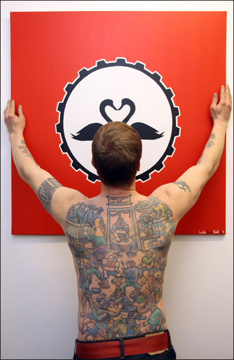

Mit Pinsel, Punkmusik und Pilsbier malt Ludek, worauf er gerade Bock
hat. Ob im Stile von Poster-Pop-Art oder apokalyptischen Visionen- Kunst
bedeutet für ihn die absolute Freiheit. Nach dem Motto "Ich male, wann ich
will, womit ich will und was ich will." schafft er Kunstwerke, die
provozieren, lebendig und aktuell sind.
Ludek Pesek Pachl im TATTOO SPIRIT - Life und Bodyart Magazin, Mai 2005
Privat-Portraits, die so-genannten Personalities, sind oftmals das
Salz in unserer Spirit-Magazin-Suppe. Denn hier werden authentische
Geschichten dokumentiert, wie sie das Leben schreibt. Nicht mehr und nicht
weniger. Solch eine Geschichte handelt auch von Ludek Pesek. Der gebürtige
Tscheche, lebt seit geraumer Zeit als Maler in Berlin wo er mit seinen
Kunstobjekten auf Ausstellungen, regelmäßig die Betrachter zum Nachdenken
anregt. Und er trägt Tattoos, die mit Sicherheit einmalig sind.
Ludek Pesek umgibt sich mit Kunst und dies gleich in dreifacher Weise. Er
selbst ist Künstler, er trägt Kunst auf seiner Haut und die Wahl der
Tattoo-Motive wurde durch einen großen Künstler maßgeblich beeinflußt.
Seine eigene Kunst, die Gemälde und Kollagen, bestehen aus kräftigen
Farben und Strukturen. Ohne großen Schnörkel weisen sie direkt auf eine
bestimmte Thematik hin. "Ich möchte schon ein wenig mit meiner Kunst
provozieren. Die Leute sollen nachdenken wenn sie meine Bilder sehen." Und
es stimmt. Nicht sofort auf den allerersten Blick ist der Hintergrund
seiner Arbeiten zu erkennen. Man muß sich bemühen, die Bilder verstehen
wollen. In der Regel nimmt er aktuelle Themen und Probleme der
Gesellschaft auf und projiziert sie auf seine Arbeiten. Meistens setzt er
diese in Form von Poster-Pop-Art oder apokalyptischen Visionen um. Kunst
bedeutet für dem 34 jährigen Ludek die absolute Freiheit. Nach dem Motto:
"Ich male, wann ich will, womit ich will und was ich will."
Seine Tattoos sind von dem Berliner Tätowierer Mattes im Studio Tattoo
Paradise gestochen worden. Das große Rückentattoo ist nach einer Vorlage
des tschechischen Künstlers Josef Lada (1887-1958) entstanden. Dessen
flachwirkenden genial einfachen Bilder haben ausdrucksvolle schwarze
Konturen und die Farbe füllt Flächen, ohne die Umrisse zu modellieren.
Josef Lada illustrierte unter anderem "Der brave Soldat Schwejk" und
"Kater Mikesch", was ihn in seiner Heimat zu einer Art Andy Warhol der
Tschechischen Republik machte. Die Idee des "Kneipenschlägerei-Motives"
wanderte schon etliche Jahre durch Ludeks Gedanken und erst in Tätowierer
Mattes fand er die Person, der er zutraute dieses Tattoo zu realisieren.
Das Schöne daran - zwischen Mattes und Ludek herrschte von Anfang nie ein
Tätowierer/Kunde Verhältnis. So malte Ludek zum Beispiel ein Gemälde für
Mattes und man tauschte letztendlich Kunst gegen Kunst.
Der Weg den Ludek bislang zurücklegte, war sicherlich nicht besonders
steinfrei. Mehrjährige Aufenthalte in Italien und Arbeiten an den
unterschiedlichsten Projekten, führten ihn dennoch immer wieder zurück zu
den Wurzeln seiner Heimat. 1998 kam er schließlich nach Berlin, wo er
seitdem lebt. Seinen Bildern nach zu urteilen scheint er hier die Kraft
und Inspiration für immer neue Werke zu finden. Auf seiner Internetseite
findet man noch viele weitere seiner Gemälde und Kollagen und die meisten
davon können auch erworben werden. Ludek Peseks Bilder sind nichts für
"Fastfood-Kunst-Konsumenten". Sie verlangen nach einem gewissen Maß an
Aufmerksamkeit. Diese jedoch wird dann reichlich belohnt. In Berlin,
Neuköln läuft im Moment (bis zum 12.06.2005) seine aktuelle Ausstellung
mit dem Titel "48 Stunden". Wer diese verpassen sollte, der besucht
einfach die Webseite von Ludek Pesek: www.rebelart.de
(photo by Robert Sedmik)
With the brush, punk music and pilsner beer paint Ludek things he have
on the easel. From pop art styled posters to apocaliptic visions - art
means the absolute freedom for him. With the motto "I paint when I want,
with I want and what I want" he create live, provoking and actual
artworks.
Ludek Pesek Pachl in TATTOO SPIRIT - Life und Bodyart Magazin, Mai 2005
Private-Portraits the so-called personalities are often the salt in our
spirit-magazine-soup. Authentic stories of a lifetime are born onto paper
here. Not more and no less.
One of those stories is about Ludek Pesek (34y.o.). Native born and grown
up in Czechoslovakia, he lives in Berlin now as a painter, where his
art-objects stimulate the visitors of his exhibitions to perceive the
world through Ludeks eyes. And he has got tattoos, which are definetly
unique and the only.
Ludek Pesek does surround himself with art. He is a painter; he wears art
on his skin and the choice of his tattoo motifs were strongly influenced
by a great artist! (read more few lines below).
His own art, the paintings and collages, are composed of vigorous colours,
patterns and even structures. They directly lead you to a certain theme,
there are no misunderstandings: "I do want to provoke a little with my
arts! I want folks to have a click in their brain while looking at my
paintings." And it is true. Not with the very first look, you realize the
background of his paintings. You have to make an effort, to want to
understand to the paintings.
Normally, he uses present themes and problems in society as his initial
point and project them into his work. Usually, he transforms it into
Poster-Pop-Art and apocalyptic visions. Art means absolute freedom to
Ludek: I paint, when I want, with what I want and what I want!
The tattoo artist Mattes from the Berlin studio Tattoo Paradise needled
Ludek's skin. The large tattoo on his back was inspired by the work of the
Czech artist Josef Lada (1887-1958). His simple ingenious flat looking
paintings have expressively black contours and colours fill in the areas,
without modelling the outlines.
E.g. Lada illustrated The good soldier Schwejk and Tomcat Mikesch, what
made him to a kind of Andy Warhol in the Czech Republic. The idea of the
Pub-Brawl-Motif was wandering through Pesek's mind for many years until he
found Mattes, to whom he had enough confidence to be capable of realizing
such a tattoo.
Mattes and Ludek's relationship was never an ordinary one, where you get
your tattoo, pay and leave. They liked each other. At the end Ludek
produced a painting for Mattes and they exchanged art for art. The path,
Ludek has covered up to now was surely not free of stones. Long stays in
Italy and lots of work on very different projects never drew him away from
the roots of his homeland. After all, he came to Berlin in 1998, where he
still lives.
Judging from his paintings, he seems to find the energy and inspiration
there, for the creation of new artwork. On his homepage you can find a
collection of pictures of many of his paintings and collages. Most of them
can be purchased. Ludek Pesek's paintings are not for the
"Fastfood-Art-Consumer". They demand for a thoughtful attention. You can
visit his recent exhibition "48 Stunden Neukölln" (48 hours Neukölln
Neukölln district in Berlin) till the 12.06.2005! In case you can't, go
visit his homepage to get an impression about his work: www.rebelart.de.
(photo Robert Sedmik)